Filippesi 4:6-9
Pace oltre ogni intelligenza
Josiah Catchpole · 29 set 2026
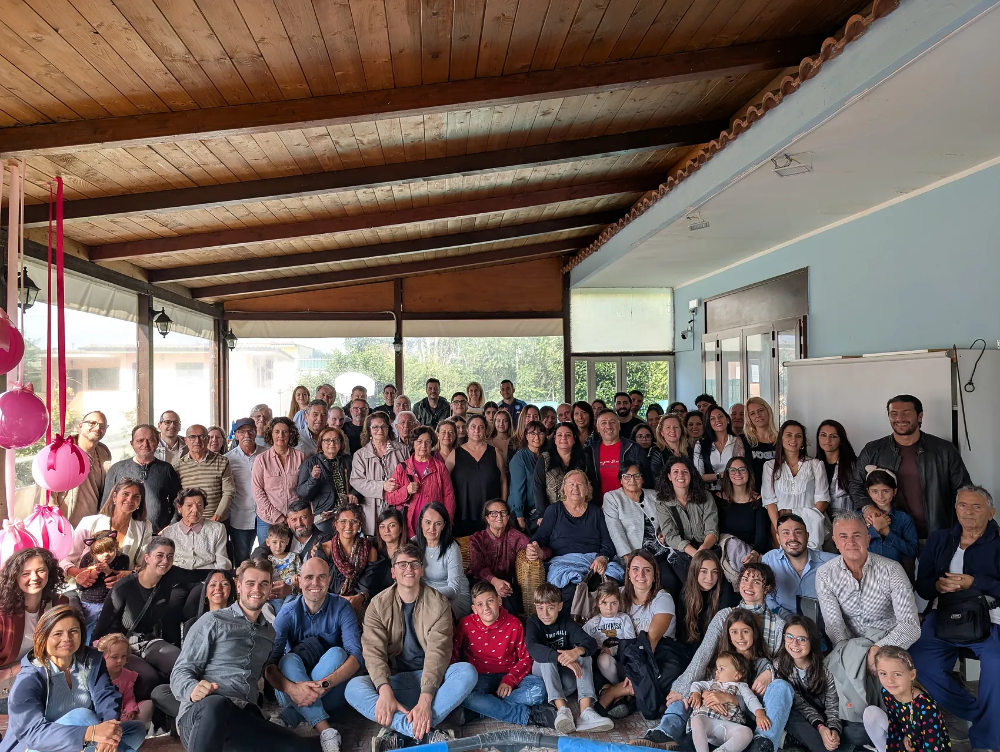
Siamo una chiesa dove puoi conoscere Gesù, trovare amicizie vere e un posto a cui appartenere. Così come sei.
Fiume di Vita è una comunità di persone semplici, di ogni età e storia, unite da una cosa: Gesù ha cambiato la nostra vita. E crediamo che possa farlo anche con la tua.
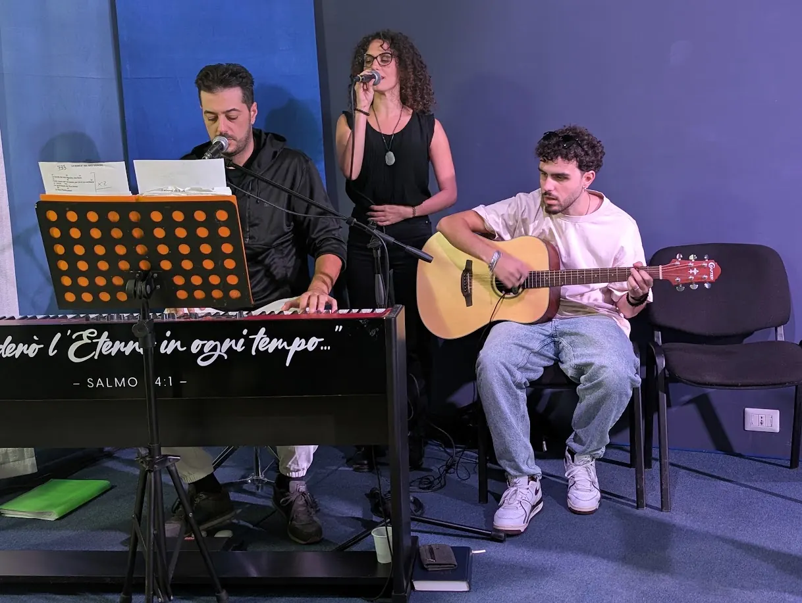
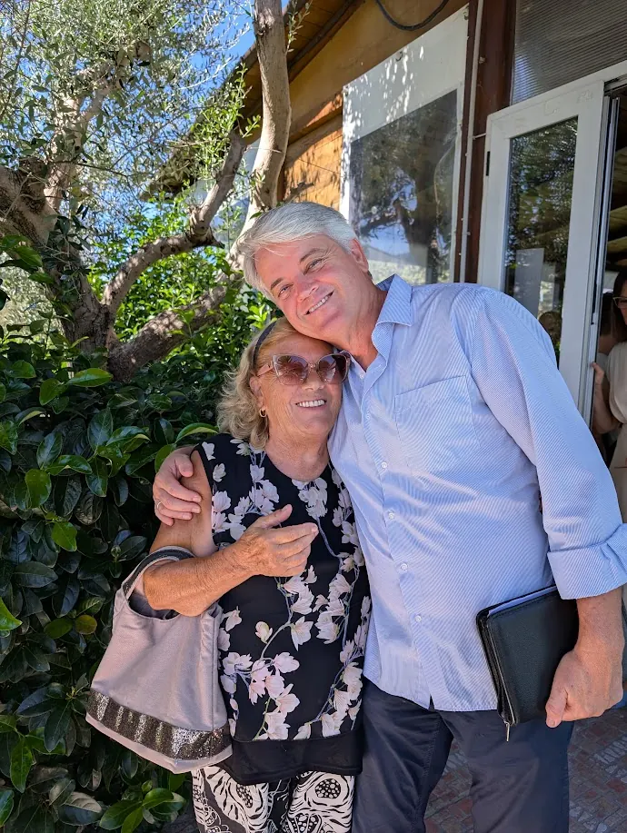
Filippesi 4:10-20 · Alec Catchpole
Un viaggio nella lettera della gioia: come vivere con pace e speranza anche quando la vita è difficile.
Josiah Catchpole · 29 set 2026
Lorenzo Piol · 29 set 2026
Alec Catchpole · 29 set 2026
Un viaggio nella lettera della gioia: come vivere con pace e speranza anche quando la vita è difficile.
Dio non ci chiede di negare le preoccupazioni, ma di non tenerle dentro: portate a lui in preghiera, sono custodite da una pace che supera ogni intelligenza.
Leggi il riassuntoLa gioia di cui parla Paolo non dipende da come vanno le cose: nasce da una relazione stabile con Dio, e per questo resiste anche nei giorni difficili.
Leggi il riassuntoDavanti a Dio non ci salva ciò che abbiamo fatto noi, ma ciò che Cristo ha fatto per noi. Chi è unito a lui per fede può dedicare la vita a conoscerlo.
Leggi il riassuntoIl Vangelo non è un biglietto per il paradiso ma una vita nuova da prendere sul serio. E lo viviamo in modo degno insieme, come popolo unito, senza mormorii né dispute.
Leggi il riassuntoIl Vangelo è inarrestabile: non solo supera gli ostacoli, ma li usa come una catapulta. Dio lo farà avanzare comunque; noi possiamo scegliere di farne parte.
Leggi il riassuntoGesù si è svuotato non nonostante fosse Dio, ma proprio perché è Dio. Chi stima Cristo sopra ogni cosa prende la sua forma, si svuota per gli altri e viene riempito da Dio.
Leggi il riassuntoUn viaggio nella lettera della gioia: come vivere con pace e speranza anche quando la vita è difficile.
Da Filippesi 1 a Filippesi 4, nell’ordine in cui si legge la lettera. Tocca una tappa.
Dio non ci chiede di negare le preoccupazioni, ma di non tenerle dentro: portate a lui in preghiera, sono custodite da una pace che supera ogni intelligenza.
Leggi il riassuntoLa gioia di cui parla Paolo non dipende da come vanno le cose: nasce da una relazione stabile con Dio, e per questo resiste anche nei giorni difficili.
Leggi il riassuntoDavanti a Dio non ci salva ciò che abbiamo fatto noi, ma ciò che Cristo ha fatto per noi. Chi è unito a lui per fede può dedicare la vita a conoscerlo.
Leggi il riassuntoIl Vangelo non è un biglietto per il paradiso ma una vita nuova da prendere sul serio. E lo viviamo in modo degno insieme, come popolo unito, senza mormorii né dispute.
Leggi il riassuntoIl Vangelo è inarrestabile: non solo supera gli ostacoli, ma li usa come una catapulta. Dio lo farà avanzare comunque; noi possiamo scegliere di farne parte.
Leggi il riassuntoGesù si è svuotato non nonostante fosse Dio, ma proprio perché è Dio. Chi stima Cristo sopra ogni cosa prende la sua forma, si svuota per gli altri e viene riempito da Dio.
Leggi il riassuntoDalla scuola domenicale al calcetto, ci sono tanti modi per fare parte della famiglia.

Storie della Bibbia, canti e giochi per i più piccoli.

Serate insieme, domande vere e amicizie che durano.

Coppie e genitori che crescono nella fede.

Bibbia, preghiera e tavola condivisa nelle case.

Incoraggiarsi, pregare e studiare la Parola insieme.
Uomini che si sostengono nella fede e nella vita.

La partita della settimana, aperta a tutti.
Incontri in inglese, per chi lo parla e chi lo impara.

Beni di prima necessità per chi è in difficoltà.
Persone della nostra comunità raccontano, con le loro parole, cosa Gesù ha fatto nella loro vita.
Arriva qualche minuto prima: c'è un caffè e qualcuno pronto ad accoglierti.
Cantiamo insieme e ascoltiamo un messaggio dalla Bibbia, chiaro e concreto per la vita di tutti i giorni.
I più piccoli hanno il loro spazio, con insegnanti che li conoscono e li amano.
Riflessioni sulla Bibbia, sulla famiglia, sul lavoro e sulle domande della vita.
Tre passi da Filippesi 4 per quando l'ansia bussa alla porta
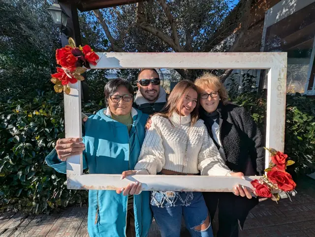
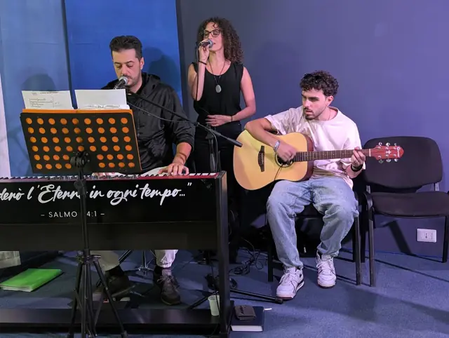
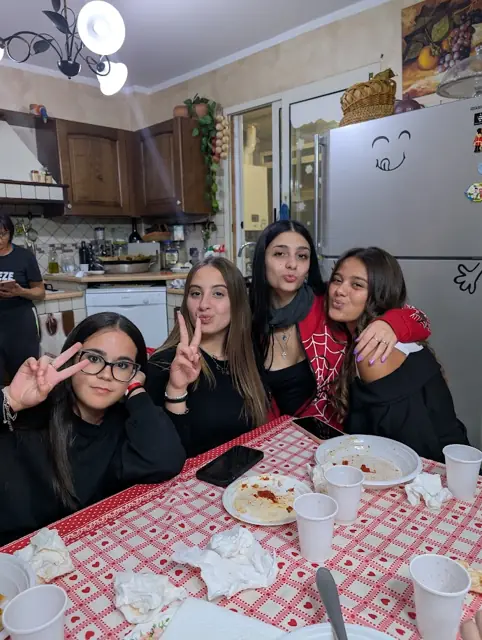
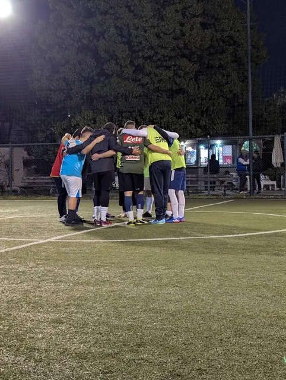
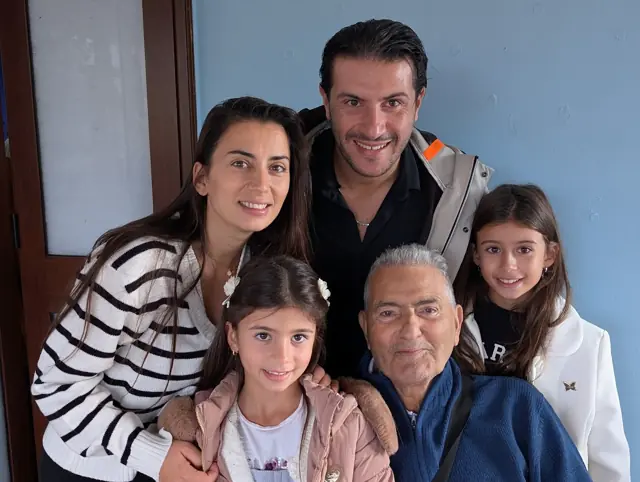
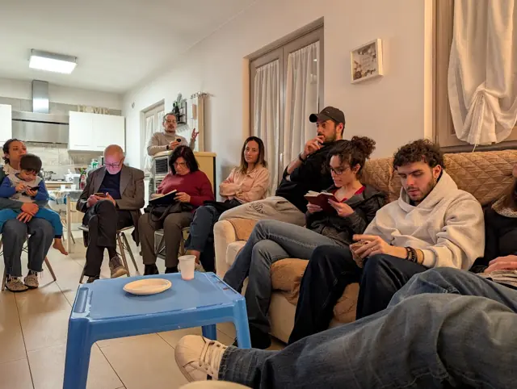
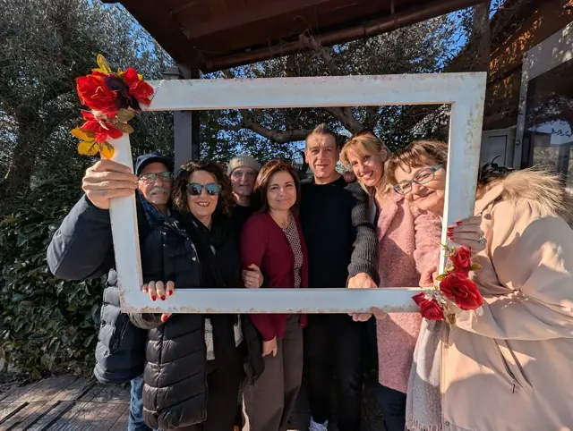
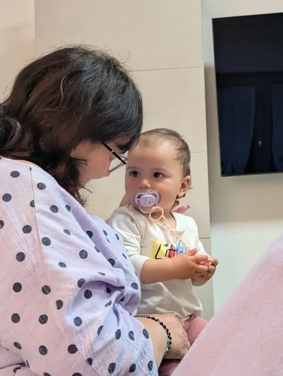
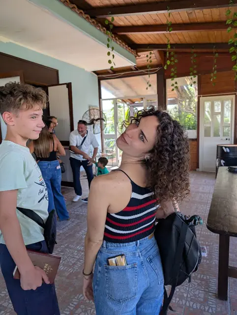
Non serve conoscere nessuno, né sapere cosa dire. Vieni così come sei: ti accoglieremo con un caffè e un sorriso.